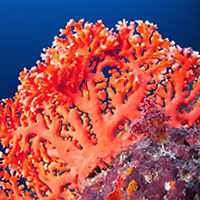

The Animals of the Sea
Healthy ecosystems depend on plant and animal species as their foundations.
When a species becomes endangered, it is a sign that the ecosystem is slowly
falling apart. Each species that is lost triggers the loss of other species
within its ecosystem. Humans depend on healthy ecosystems to purify our environment.
Without healthy forests, grasslands, rivers, oceans and other ecosystems, we will
not have clean air, water, or land. If we allow our environment to become
contaminated, we risk our own health.
Why we need to save the Animals
Until recently, humankind seemed to view the ocean as a source of infinite
resources. Its vast size and depth and unexplored frontiers made the ocean
appear invulnerable to overexploitation.The truth is that the populations
of many species are decreasing at an unsustainable rate, and the number of
species listed as Endangered from marine life Families such as whales, dolphins,
manatees and dugongs, salmon, seabirds, sea turtles, and sharks to name a few,
are on the rise.
Many marine species have ranges that extend beyond national borders,
and trade in endangered species is a global phenomenon. In these cases,
protecting threatened and endangered species is helped by international
agreements, such as the Convention on International Trade in Endangered
Species of Wild Fauna and Flora (CITES) and the International Whaling
Commission. For example, about one-fourth of the ESA listed species are
not found in in the U.S. and its waters, but are protected in conjunction
with CITES.
Turtles
Dolphins
Sharks

Corals

The Dolphin
These clever, streamlined mammals are found in most of the world’s
oceans, including around the UK. By protecting marine dolphins like
these we’re helping keep our seas healthy – which is good for all the
other wildlife, and billions of people, who rely on the sea for their
survival. Bottlenose dolphins are generally social creatures that live
in groups called ‘pods’, which can contain hundreds of individuals.
They sometimes hunt in groups with other dolphins too.